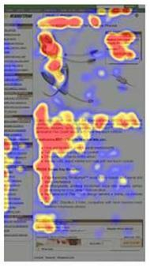

Eye tracking technology has been used many areas including visual systems, cognitive linguistics, and product design. Newer technology is easier to use and less invasive. Older equipment was head-mounted and more modern equipment looks just like a monitor.
Eye tracking is a useful tool for web design. It can show what areas of a page are grabbing a user’s attention and areas that are being ignored. Eye tracking is useful in showing how a user searches for information.
The F-Shape Reading Pattern
Nielsen’s (2006) eye tracking research has demonstrated that users read web content in an F-shaped pattern. The F-shape reading pattern refers to the viewing order: users start by reading across the top line and then look down the page a little and read across again and then continue down the left side.
The adjacent hotspot map shows the general “F” pattern of eye movement. As you can see, most of the fixations are concentrated in the top left hand corner of the page. The image is from an e-commerce site and shows an interesting pattern. There is a picture in the middle of the page. The second line is lower than normal because it moves to the text below the picture. The top right hand corner contains the price.
Implications
Clearly we have known and eye tracking support that users do not read all of the content on a Web page. Obviously the most important information should be in the first two paragraphs (Nielsen, 2006). Paragraphs and bullet points should begin with “information-carrying” words that are noticed when the users scan the left side.
Eye Gaze Patterns for Searching versus Browsing
There are some gaze differences when users are searching versus browsing a Web page. Shrestha (2007) investigated difference between text-based and picture-based content; and the differences in searching and browsing.
Shrestha asked participants to find the backpack category image in a series of thumbnails. He also asked them to find which backpack was best for narrow trails. He compared the gaze patterns for these two tasks to the same participants just browsing the web page. Participants also tried to find the mountain bike category that unbeknownst to them did not exist.
In the browsing condition, participants scanned each row of pictures from right to left down each row until they reached the bottom of the page. In the backpack search condition their eye movements were less systematic. They seemed to jump all over the page until they found the backpack category. However, in both conditions, participants spent little time looking at the items below the fold. For the non-existent mountain bike category, participant’s fixations were concentrated in the top left corner.
Browsing and searching produced similar “F” shaped gaze patterns. That is, they fixated more on the left side than the right and more fixations in the first few lines then the lower lines. But the “F” shaped pattern was not there when searching picture-based pages with most of the fixations about the fold.
Single and Dual-Column Eye Movement
Shrestha (2008) was interested in the difference between one- and two-column web pages. He used two fictitious news story pages, one single and one with two columns. Half of the participants familiarized themselves with the story and the other half located the name of a person mentioned in the news story. After task completion, participants were asked if they saw any ads on the page.
Results showed a distinct “F” or “E” pattern for the one-column page and the left column of the two-column condition. There was no pattern on the right column of the two-column page. Both one- and two-column page fixations decreased as they moved down the page. For the browsing condition, gaze plots showed that the participant’s eyes wandered to the ads and links on the page. Suggesting that participants looked around more because they did not have a specific goal.
For two-column pages, participants looked at the bottom of the right column on the page whereas, participants in the one-column condition spent little time at the bottom of the page. Participants also fixated on the right column of the two-column page more than they fixated on the bottom half of the one-column page. This implies that two-column pages are more likely to be read.
Banner Blindness
Users seldom look at banner ads or anything that remotely looks like an advertisement (Nielsen, 2007). Results showed that very few users looked at the ads in all levels of engagement. Whether users were quickly scanning, partially reading or thoroughly reading, they rarely took their eyes off the content.
Fancy Formatting, Fancy Words
Nielsen (2007) was interested in how fancy formatting or words would impact user’s gaze patterns. He asked users to locate the current population of the United States on the U.S. Census Bureau Web site. The U.S. Census Bureau’s web page put the population in big red letters in the top right hand corner of the page. Only 14% of the users actually found the information.
As first it appeared that participants just ignored the right sidebar section, but this was not the case. Participants looked at all the main areas of the page and even looked at the number. Most of the participants only fixed on the first part of the number. This meant that users scanned the area but didn’t actually read the number.
Conclusion
All of this research shoes the importance of eye tracking and what it can tell us about what the user looks at (and infer what the user thinks). It also shows us how hard it is to design a usable web page. There is a delicate balance between making information salient and too flashy causing it to be ignored.
Resources
Nielsen, J., (2007). Fancy Formatting, Fancy Words = Looks Like a Promotion = Ignored. Alertbox, September 4, 2007  .
.
Nielsen, J., (2006). F-Shaped Pattern for Reading Web Content. Alertbox, April 17, 2006  .
.
Shrestha, S. & Lentz, K., (2007). Eye Gaze Patterns while Searching vs. Browsing a Web site. Usability News, January 2007, Vol. 9, Issue 1.
Shrestha, S., & Owens, J., (2008). Eye Movement Patterns on Single and Dual-Column Web Pages. Usability News, May 2008, Vol. 10, Issue 1.